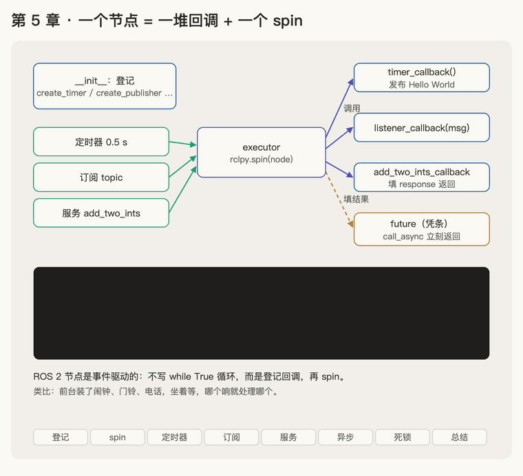

第 5 章 · 用 Python 写节点：发布、订阅、服务、参数
本章回答：一个 ROS 2 节点的 Python 代码长什么样？定时器、发布者、订阅者、服务、客户端、参数分别怎么写？为什么"在回调里同步调用服务"会卡死？
讲解日期：2026-11-13 · 上一章：第 4 章 工作区与第一个包 · 下一章：第 6 章 自定义接口与动作
对应原文：ros2_documentation/source/ROS-Framework/client-libraries/Working-with-Client-Libraries/下的Writing-A-Simple-Py-Publisher-And-Subscriber.rst、Writing-A-Simple-Py-Service-And-Client.rst、Using-Parameters-In-A-Class-Python.rst；ros2_documentation/source/ROS-Framework/interfaces/services/Working-with-services/Sync-Vs-Async.rst（路径相对ros2/materials/）
对应 study-plan 阶段 B2、B4，动手里程碑 R-M2。
本章缩写：rclpy= ROS Client Library for Python（ROS / 客户端 / 库 · Python 版）；RPC = Remote Procedure Call（远程 / 过程 / 调用：服务的本质）；future（不是缩写，"期货 / 凭条"：异步调用先拿到的一张凭条，结果之后才填进去）；async = asynchronous（异步）。全部缩写见 附录 · 缩写与术语表
本章先看总图，再分 4 步：
| 步 | 内容 | 状态 |
|---|---|---|
| 0 | 总图：一个节点里的定时器、发布、订阅、服务和 executor | ✅ |
| 1 | 节点骨架：继承 Node、rclpy.init、spin |
✅ |
| 2 | 发布者 + 定时器、订阅者 | ✅ |
| 3 | 服务端与客户端：call_async 和 future，同步调用为什么会死锁 |
✅ |
| 4 | 参数：声明、读取、改动时的回调 | ✅ |
讲解
总图 · 一个节点就是"一堆回调 + 一个 spin"

可交互版：animations/05-python-node.html（内置浏览器：http://localhost:8340/05-python-node.html）。
核心想法：ROS 2 节点是事件驱动的。你不写"一直循环、不停检查"的主程序，而是登记一堆回调（定时器到点了做什么、收到消息做什么、有人请求服务做什么），然后调用 rclpy.spin(node) 把控制权交给 executor。executor 发现哪件事发生了，就调用对应的回调（第 1 章总图 2 第 ⑨ 步）。
类比：餐厅前台。你不用每分钟跑去门口看有没有客人，而是装一个门铃（订阅）、一个闹钟（定时器）、一部电话（服务），然后坐在前台等（spin）。哪个响了就去处理哪个。
第 1 步 · 节点骨架
依据：ROS-Framework/client-libraries/Working-with-Client-Libraries/Writing-A-Simple-Py-Publisher-And-Subscriber.rst（下称"发布订阅教程"）。官方所有 Python 例子都是这个骨架：
import rclpy
from rclpy.executors import ExternalShutdownException
from rclpy.node import Node
class MyNode(Node): # ① 继承 Node
def __init__(self):
super().__init__('my_node') # ② 节点名
# ③ 在这里创建发布者、订阅者、定时器、服务……
def main(args=None):
try:
with rclpy.init(args=args): # ④ 初始化 ROS；with 结束时自动清理
node = MyNode()
rclpy.spin(node) # ⑤ 交给 executor，一直处理回调
except (KeyboardInterrupt, ExternalShutdownException):
pass # ⑥ Ctrl+C 正常退出
| 编号 | 做什么 | 忘了会怎样 |
|---|---|---|
| ① ② | 继承 Node，起节点名 |
这个名字就是 ros2 node list 里看到的 |
| ④ | rclpy.init 连上 ROS（读 --ros-args 等） |
创建节点时报错 |
| ⑤ | spin 让回调有机会执行 |
回调永远不跑（第 1 章口诀"spin 才叫醒回调"） |
| ⑥ | 捕获 Ctrl+C | 退出时打一屏异常 |
with rclpy.init(...) 是较新的写法（旧教程是手动 rclpy.init() + rclpy.shutdown()），效果一样，但不会忘了清理。
第 2 步 · 发布者 + 定时器、订阅者
发布者（发布订阅教程第 2 步，官方 MinimalPublisher 的核心几行）：
from std_msgs.msg import String
class MinimalPublisher(Node):
def __init__(self):
super().__init__('minimal_publisher')
self.publisher_ = self.create_publisher(String, 'topic', 10) # 类型、话题名、队列深度
self.timer = self.create_timer(0.5, self.timer_callback) # 每 0.5 秒调一次
self.i = 0
def timer_callback(self):
msg = String()
msg.data = 'Hello World: %d' % self.i
self.publisher_.publish(msg)
self.get_logger().info('Publishing: "%s"' % msg.data)
self.i += 1
订阅者：
class MinimalSubscriber(Node):
def __init__(self):
super().__init__('minimal_subscriber')
self.subscription = self.create_subscription(
String, 'topic', self.listener_callback, 10) # 类型、话题名、回调、队列深度
def listener_callback(self, msg):
self.get_logger().info('I heard: "%s"' % msg.data)
逐个看参数：
- 类型（
String）：两边必须一样，否则匹配不上（第 1 章"三项匹配"之一）。from std_msgs.msg import String导入的类，就是 rosidl 从.msg文件生成的。 - 话题名（
'topic'）：不以/开头的是相对名，会自动加上节点的命名空间（第 3 章）。真实代码里通常写相对名，方便用命名空间分组。 10：队列深度，是最简写的 QoS。意思是"最多攒 10 条没处理的，满了丢最旧的"（第 1 章第 ⑧ 步）。第 7 章细讲 QoS。- 定时器：
create_timer(周期秒, 回调)。控制回路就是这么写的：create_timer(0.02, self.control_step)就是 50 Hz。
为什么把对象存成 self.xxx？ 发布者、订阅者、定时器对象被 Python 回收了，对应功能就停了。存到 self 上保证它们和节点同生共死。
package.xml 和 setup.py 要改两处（发布订阅教程第 2.2–2.3 步）：package.xml 加 <exec_depend>rclpy</exec_depend> 和 <exec_depend>std_msgs</exec_depend>；setup.py 的 entry_points 登记 'talker = 包名.模块名:main' 和 'listener = ...'（第 4 章）。
第 3 步 · 服务端与客户端
依据：.../Writing-A-Simple-Py-Service-And-Client.rst（下称"服务教程"）、ROS-Framework/interfaces/services/Working-with-services/Sync-Vs-Async.rst（下称"同步异步"）。
服务端：
from example_interfaces.srv import AddTwoInts
class MinimalService(Node):
def __init__(self):
super().__init__('minimal_service')
self.srv = self.create_service(AddTwoInts, 'add_two_ints', self.add_two_ints_callback)
def add_two_ints_callback(self, request, response): # 收到请求、填好回复、返回
response.sum = request.a + request.b
return response
AddTwoInts.srv 就是 int64 a / int64 b / --- / int64 sum。回调拿到 request，把结果写进 response 再 return。
客户端（官方 MinimalClientAsync）：
class MinimalClientAsync(Node):
def __init__(self):
super().__init__('minimal_client_async')
self.cli = self.create_client(AddTwoInts, 'add_two_ints')
while not self.cli.wait_for_service(timeout_sec=1.0): # 等服务端上线
self.get_logger().info('service not available, waiting again...')
self.req = AddTwoInts.Request()
def send_request(self):
self.req.a = 41
self.req.b = 1
return self.cli.call_async(self.req) # 立刻返回一个 future
def main(args=None):
with rclpy.init(args=args):
node = MinimalClientAsync()
future = node.send_request()
rclpy.spin_until_future_complete(node, future) # 一边 spin 一边等结果
node.get_logger().info('sum = %d' % future.result().sum)
future 是什么？ call_async 不等回复，立刻返回一张"凭条"（future）。回复到了，ROS 把结果填进凭条。spin_until_future_complete 的意思是"一边处理回调，一边等这张凭条被填上"。类比：餐厅取号。点完餐拿到号码牌，你可以先去干别的，叫到号再去取餐。
为什么不用同步的 call()？ 官方明确"不推荐用 call()，很容易死锁"（同步异步一文开头）。死锁是这样发生的：
- 你在定时器回调里写
result = self.cli.call(req)，它会阻塞等回复； - 回复到了之后，要靠 executor 在
spin里把它取出来，填进结果； - 但 executor 是单线程的，正卡在你的定时器回调里，没空去取回复；
- 回调等回复，回复等回调结束，谁也等不到谁。
类比：前台只有一个人。他打电话订货，说"等对方回电"，然后就一直站在电话旁边不动。可回电要打到前台另一部电话上，而前台没人去接。
正确做法：
- 在回调里用
call_async，再给 future 挂一个"完成后做什么"的回调：future.add_done_callback(self.on_result)； - 或者用多线程 executor + 回调组（第 9 章），让等待和接收在不同线程里；
- 或者用 Lyrical 新增的
AsyncNode，在回调里直接await client.call(request)（Releases/Release-Lyrical-Luth.rst"AsyncNode" 一节）。
第 4 步 · 参数
依据：.../Using-Parameters-In-A-Class-Python.rst（下称"参数教程"）、ROS-Framework/parameters/Working-with-parameters.rst。
声明 → 读取：
class MinimalParam(Node):
def __init__(self):
super().__init__('minimal_param_node')
self.declare_parameter('my_parameter', 'world') # 名字 + 默认值（默认值决定类型）
self.timer = self.create_timer(1, self.timer_callback)
def timer_callback(self):
my_param = self.get_parameter('my_parameter').get_parameter_value().string_value
self.get_logger().info('Hello %s!' % my_param)
- 必须先
declare_parameter，没声明的参数默认不能 get / set。好处：拼错名字会立刻报错，而不是悄悄用默认值。 - 默认值的类型就是参数的类型。声明成字符串，之后
param set一个整数会被拒绝。 - 可以加描述和约束：
declare_parameter('speed', 0.5, ParameterDescriptor(description='最高速度 m/s'))，还能设取值范围、只读（参数教程 2.1.1 节）。
运行中改了参数，节点怎么知道？ 三种回调（Working-with-parameters.rst 对应三节）：
| 回调 | 什么时候调用 | 用途 |
|---|---|---|
add_pre_set_parameters_callback |
改动生效前 | 可以顺手改动 / 增加要改的参数 |
add_on_set_parameters_callback |
改动生效前 | 校验：返回 SetParametersResult(successful=False) 就拒绝这次修改 |
add_post_set_parameters_callback |
改动成功后 | 更新自己的成员变量、重新配置 |
官方特别提醒：校验回调里不要有副作用（不要顺手改成员变量），因为后面的回调可能还会拒绝这次修改，那样你的成员变量就和真实参数对不上了。要在改成功后做事，用 post-set 回调。
另一种常见写法：不用回调，每次用参数时都 get_parameter（像上面的定时器那样）。简单，适合不常改、读取不频繁的参数。
本章和 R-M2 的关系：R-M2 要你自己写一个包，里面有一对发布订阅、一对服务客户端、一个可配置参数。照本章骨架写，不要直接复制官方代码，改成你自己的消息内容（比如发布"当前时间"、服务"把两个浮点数相乘"）。
练习与作答记录
练习 5-1（第 2 步）：写出一个 Python 节点的 __init__：每 20 毫秒发布一次 geometry_msgs/msg/Twist 到相对话题 cmd_vel，线速度固定 0.2。只写关键几行。
- 作答：（待作答）
练习 5-2（第 2 步）：self.create_subscription(...) 的返回值没有存到 self.sub，只写成 self.create_subscription(...)（不赋值）。可能出什么问题？
- 作答：（待作答）
练习 5-3（第 3 步）：用自己的话解释：为什么在单线程 executor 的定时器回调里调用 client.call(req) 会卡死？给出一种改法。
- 作答：（待作答）
练习 5-4（第 4 步）：你想让参数 max_speed 只接受 0 到 1 之间的值，超出就拒绝修改。用哪种回调？返回什么？
- 作答：（待作答）
口诀
- 骨架：继承 Node 起个名，init、spin 加 Ctrl+C。
- 四件套：
create_publisher / create_subscription / create_timer / create_service，对象都挂在self上。 - 服务：服务端填 response 返回；客户端
call_async拿凭条，回调里别用同步call()。 - 参数：先声明再用；校验在 on-set（无副作用），收尾在 post-set。
本章复习卡片编号
R15–R17，见 ../review.md。
附录 · 延伸阅读
留给以后深入学习用，不影响本章主线。★ 是建议先读的。
materials/指ros2/materials/；不带前缀的路径在materials/ros2_documentation/source/下（design/、ecosystem/开头的在materials/下）；...表示省略了和上一条相同的目录。
推荐阅读
| 读什么 | 读哪里 | 读它为了什么 |
|---|---|---|
★ Writing-A-Simple-Py-Publisher-And-Subscriber.rst |
materials/ros2_documentation/source/ROS-Framework/client-libraries/Working-with-Client-Libraries/Writing-A-Simple-Py-Publisher-And-Subscriber.rst |
发布订阅完整步骤（含 package.xml、setup.py 修改）。 |
★ Writing-A-Simple-Py-Service-And-Client.rst |
.../Writing-A-Simple-Py-Service-And-Client.rst |
服务端与异步客户端。 |
★ Sync-Vs-Async.rst |
ROS-Framework/interfaces/services/Working-with-services/Sync-Vs-Async.rst |
同步调用为什么会死锁、什么情况下能安全使用。 |
Using-Parameters-In-A-Class-Python.rst |
.../Using-Parameters-In-A-Class-Python.rst |
类里声明和读取参数、ParameterDescriptor。 |
Working-with-parameters.rst |
ROS-Framework/parameters/Working-with-parameters.rst |
三种参数回调；.../Monitoring-For-Parameter-Changes-Python.rst：用 ParameterEventHandler 监听别的节点的参数。 |
Writing-An-Async-Node-With-Asyncio-Python.rst |
ROS-Framework/nodes/Working-with-nodes/Writing-An-Async-Node-With-Asyncio-Python.rst |
Lyrical 的 AsyncNode，await 写法。 |
| C++ 对照 | .../Writing-A-Simple-Cpp-Publisher-And-Subscriber.rst、.../Writing-A-Simple-Cpp-Service-And-Client.rst、.../Using-Parameters-In-A-Class-CPP.rst（结构完全对应：rclcpp::Node、create_publisher<T>、rclcpp::spin）。 |
— |
055_ros_parameter_design.md |
design/articles/055_ros_parameter_design.md |
参数系统为什么设计成"属于节点、先声明后使用"。 |
数学原理
- 本章没有用到数学。
公式清单
| 公式 / 规则 |
|---|
| create_publisher(类型, 话题, 深度)；create_timer(周期秒, 回调)；周期 0.02 s = 50 Hz |
代码对照：把本章的数字用代码算一遍
纯 Python 模拟，不需要 ROS 2（原因见第 1 章这一节）。代码在仓库本地
ros2/solutions/chapter-code/ch05_python_node.py，配套测试tests/test_ch01_05.py；同名 notebook 在notebooks/ch05_python_node.ipynb（讲解和代码放在一起，一格一格跑）。Mac 上直接能跑：
bash cd ros2/solutions/chapter-code uv run python ch05_python_node.py # 一步一步打印 uv run pytest tests/test_ch01_05.py
讲义 ↔ 代码：
| 讲义 | 规则 / 数字 | 写法 | 跑出来 |
|---|---|---|---|
| 第 1 步 骨架 | 不 spin 回调不跑 | 建好定时器后看 counter |
0 条 |
| 第 2 步 定时器 + 发布订阅 | 每 0.5 秒发一条 | ex.spin_for(2.0) |
收到 Hello World: 0…3 共 4 条 |
| 第 3 步 future | call_async 立刻返回凭条 | fut.done |
先 False，spin 后 True，sum = 42 |
| 第 3 步 死锁 | 单线程回调里同步 call | node.call(...) 在定时器里 |
DeadlockError |
| 第 4 步 参数 | 先声明；默认值定类型 | set_parameter('my_parameter', 42) |
False（被拒绝） |
关键几行：
fut = Future() # 凭条
self.ex.schedule(self.ex.now + 0.001, lambda: fut.set_result(handler(request, {})))
return fut # call_async：不等，立刻返回
if self.ex.in_callback: # call：唯一的线程正卡在回调里
raise DeadlockError("...")
if type(value) is not type(self._params[name]): # 参数类型由默认值决定
return False
代码里才看得到的 4 件事：
- 这是个迷你 rclpy：方法名和真 API 一样，但时间是假的（
MiniExecutor按待办表推进，不 sleep），所以 2 秒瞬间跑完。 - 发布不等于回调：
publish只是往 executor 的待办表里加一件事，真正调订阅回调要等 spin，和第 1 章"spin 才叫醒回调"一致。 - 死锁在真 rclpy 里不会报错，而是一直卡住。模拟里为了能演示，检测到"在回调里同步等"就抛异常。
- 参数校验回调（on_set）这里没写，留给练习 5-4。
自己改一改（不影响练习答案）：
- 把定时器周期改成 0.2 秒，
spin_for(1.0)，数一数收到几条； - 把
call_async的请求改成别的两个数，看sum。